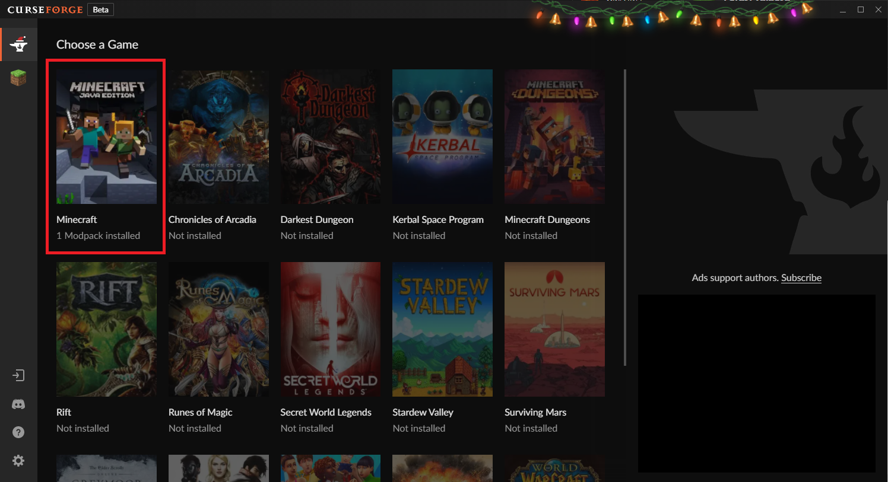
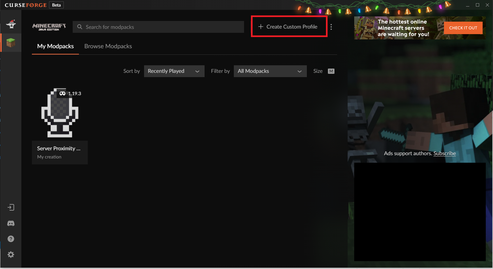
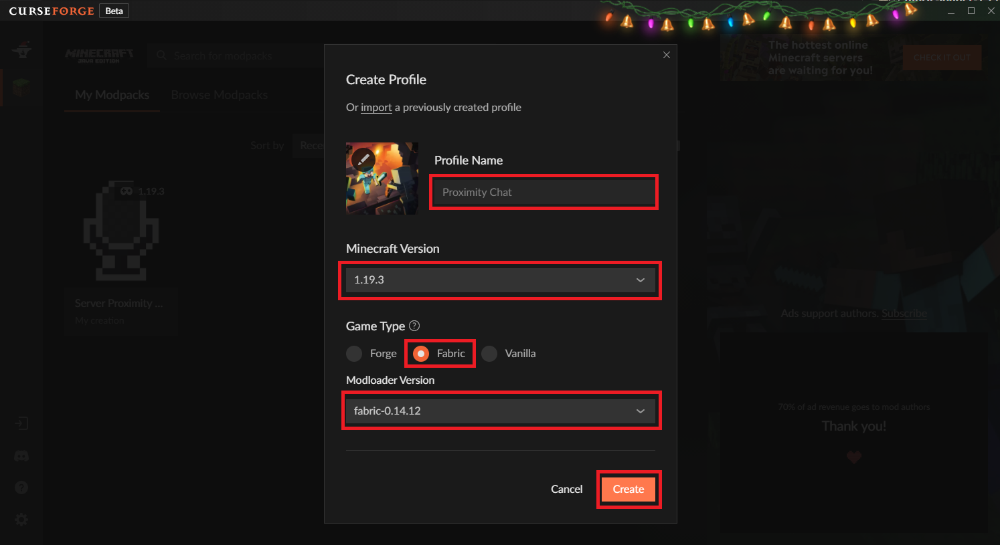
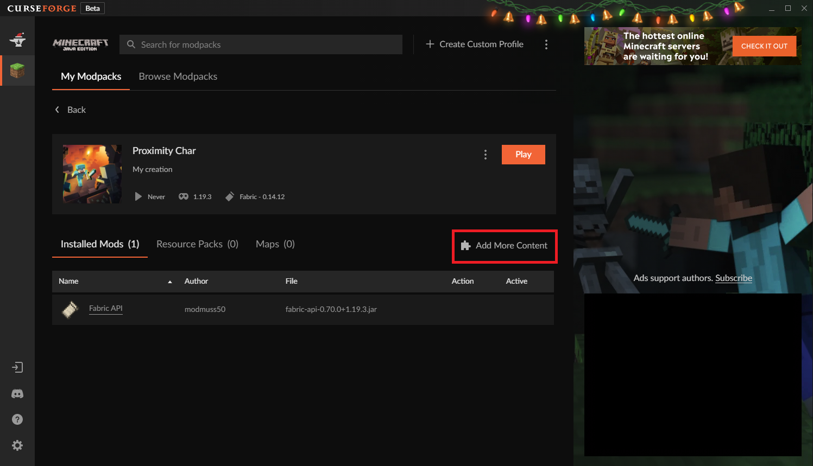
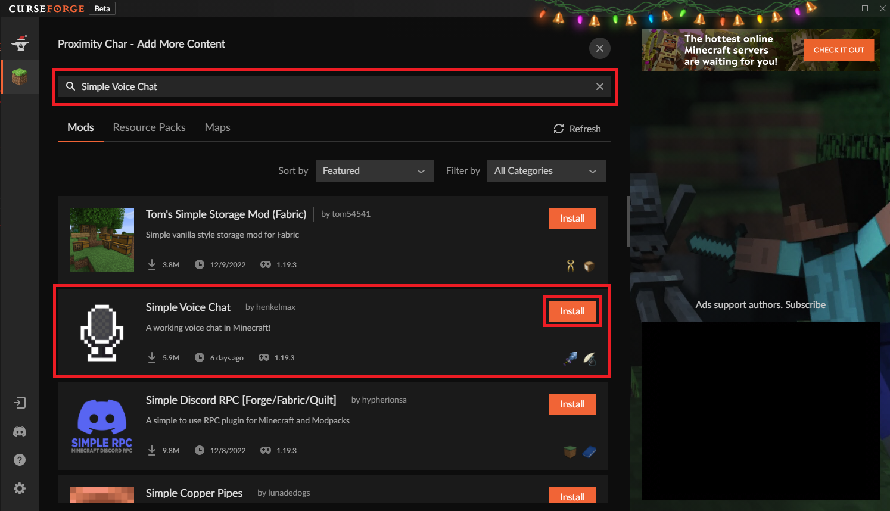
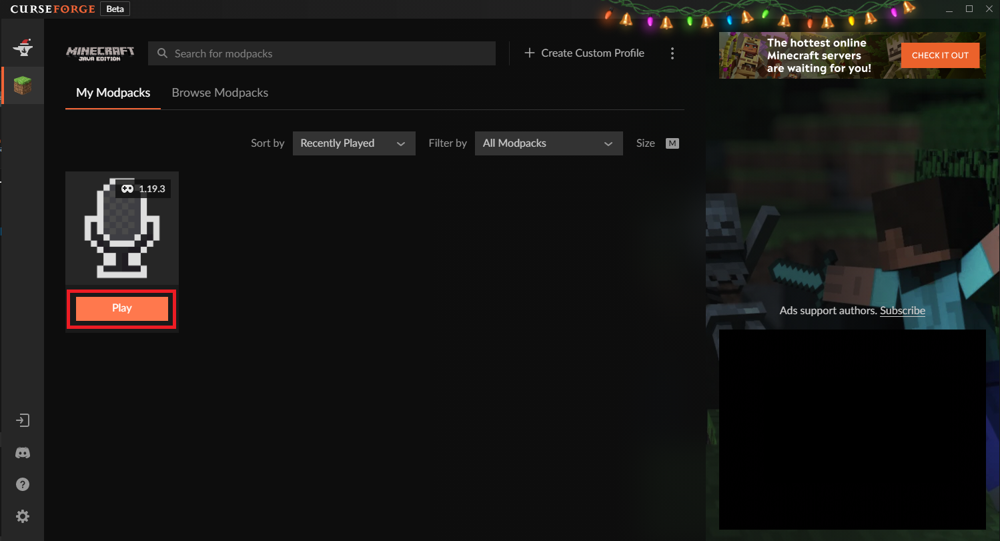

Installare CurseForge.
Avviarlo e selezionate Minecraft come gioco desiderato.

Cliccate su "+ Create Custom Profile".

Profile name: a piacimento (es. Proximity Chat).
Minecraft Version: selezionare 1.19.3. Se in un futuro cambieremo la versione di Minecraft del server sara' da cambiare anche la versione in questo profilo che stiamo creando.
Game Type: Fabric.
Modloader Version: utilizzare sempre la piu' recente. (nel mio caso fabric-0.14.12)
Cliccare su "Create".

Cliccare sulla nuova versione appena creata.
Cliccare su "Add More Content".

Scrivere sulla barra di ricerca: "Simple Voice Chat".
Cliccare su installa.

Ed e' tutto pronto. Ora clicka su Play.
